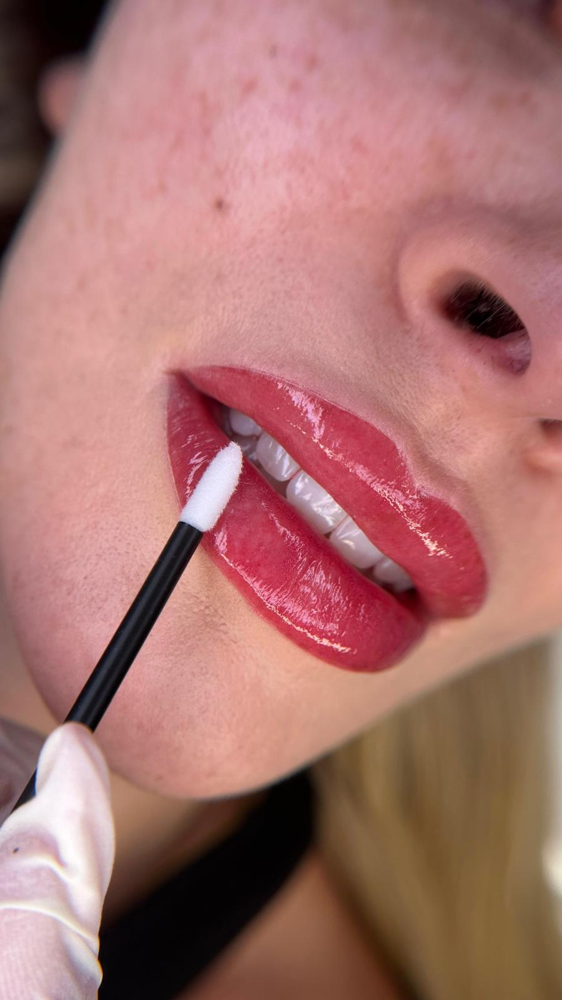
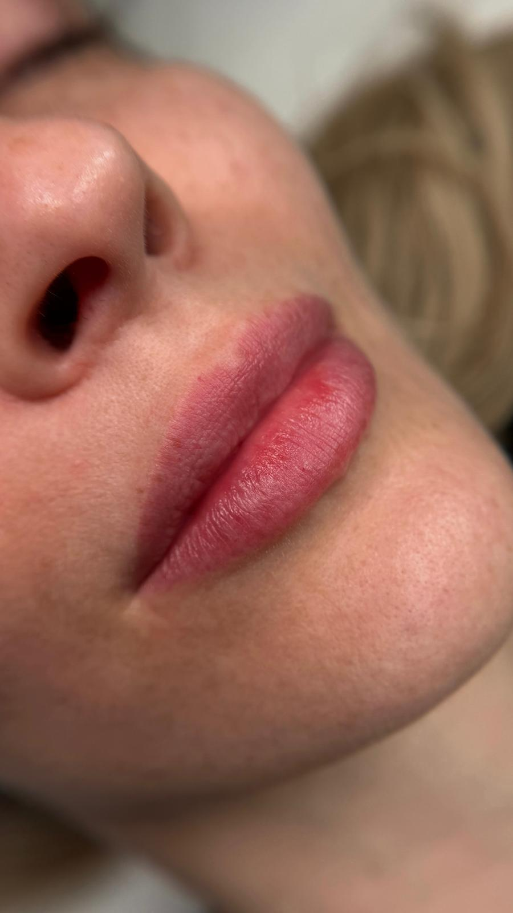

„Ich will vollere Lippen.“ Hinter diesem Satz stecken oft zwei ganz verschiedene Wünsche: mehr Farbe oder mehr Volumen.
Lip Blush ist eine Pigmentierung, Filler ist eine Unterspritzung. Das eine arbeitet mit Farbe und Kontur, das andere mit Volumen. Klick dich durch und sieh dir an, was jede Methode an der Lippe verändert.
Die Lippe ohne alles
Viele Lippen haben eine schöne Form, wirken aber blass oder verlieren am Rand an Kontur. Andere sind kräftig gefärbt, aber schmal. Schon hier entscheidet sich, welche Methode überhaupt Sinn ergibt.
Lip Blush: Farbe, die wie deine eigene wirkt
Beim Lip Blush wird Farbpigment fein in die Lippe eingearbeitet. Das Ergebnis ist ein frischer, gleichmäßiger Lippenton, als hättest du einen leicht getönten Balm aufgetragen. Bei mir heißt diese zarte Variante Aquarell Lips.
Die Form der Lippe bleibt gleich. Lip Blush gibt kein echtes Volumen, aber Farbe lässt Lippen oft lebendiger und dadurch voller wirken.
Mit Kontur und Schattierung: der optische Volumen-Effekt
Wird zusätzlich der Rand definiert und zur Mitte hin schattiert, entsteht Tiefe. Die Lippe wirkt klarer umrissen und optisch voller, ohne dass sich ihre Größe verändert. Das ist das Prinzip der 3D Lips.
Gut geeignet, wenn die Kontur unscharf ist oder die Lippe leicht asymmetrisch wirkt.
Filler: echtes Volumen, keine Farbe
Beim Lippenfiller wird meist Hyaluronsäure in die Lippe gespritzt. Die Lippe wird tatsächlich größer, die Farbe bleibt aber, wie sie ist. Eine blasse Lippe ist nach dem Filler eine größere blasse Lippe.
Wichtig: Eine Unterspritzung ist in Deutschland ein Eingriff, der Ärztinnen und Ärzten beziehungsweise Heilpraktikern vorbehalten ist. Das ist keine Behandlung für ein Kosmetik- oder PMU-Studio, auch nicht für meins.
Kann man beides kombinieren?
Ja, viele Frauen haben beides: Volumen vom Filler, Farbe und Kontur vom Lip Blush. Wichtig ist nur, dass beides nicht gleichzeitig passiert. Die Lippe sollte nach dem einen Eingriff vollständig abgeheilt und abgeschwollen sein, bevor der andere folgt.
Sag mir beim Beratungsgespräch, ob und wann du Filler hattest oder planst. Den Abstand zum Filler klärst du am besten auch mit der behandelnden Ärztin oder dem Arzt.
Lip Blush und Filler im direkten Vergleich
Lip Blush (Aquarell oder 3D Lips)
- Verändert
- Farbe, Kontur, optische Tiefe
- Hält
- in der Regel ein bis drei Jahre
- Wer
- PMU-Artistin
- Danach
- einige Tage kräftige Farbe und leichte Schwellung, Abheilung rund vier Wochen
- Bei mir
- 300 €, Nachbehandlung 50 €
Lippenfiller
- Verändert
- Volumen und Form
- Hält
- meist einige Monate bis etwa ein Jahr, je nach Produkt und Stoffwechsel
- Wer
- Ärztin, Arzt oder Heilpraktiker
- Danach
- Schwellung und mögliche blaue Flecken in den ersten Tagen
- Kosten
- je nach Praxis und Menge sehr unterschiedlich
Was passt zu dir?
- Deine Lippen wirken blass oder müde? Dann ist Lip Blush die passende Wahl. Die zarte Variante sind Aquarell Lips.
- Der Rand verläuft, die Form wirkt unklar oder leicht ungleich? Dann bringen 3D Lips mit Kontur und Schattierung mehr Definition.
- Du möchtest wirklich mehr Volumen? Dann ist ein Filler das richtige Thema. Dafür bist du bei einer Ärztin oder einem Arzt richtig, nicht bei mir.
- Du weißt es noch nicht? Dann lass uns im Beratungsgespräch schauen. Ich sage dir ehrlich, ob eine Pigmentierung deinen Wunsch erfüllen kann.
So sieht Lip Blush in echt aus
Dieselben Lippen direkt nach der Behandlung und abgeheilt. Frisch ist die Farbe kräftig und die Lippe leicht geschwollen, abgeheilt wirkt sie weich und natürlich.


Häufige Fragen
Nein, die Größe bleibt gleich. Farbe und eine klar definierte Kontur lassen die Lippen aber oft voller wirken. Echtes Volumen gibt es nur mit einem Filler beim Arzt.
Lip Blush hält in der Regel ein bis drei Jahre, je nach Haut, Pflege und Sonne. Hyaluron-Filler werden meist innerhalb einiger Monate bis etwa eines Jahres abgebaut.
In der Regel ja, solange der Filler vollständig abgeschwollen und gut eingeheilt ist. Sag mir im Beratungsgespräch, wann du Filler bekommen hast, dann planen wir den passenden Zeitpunkt.